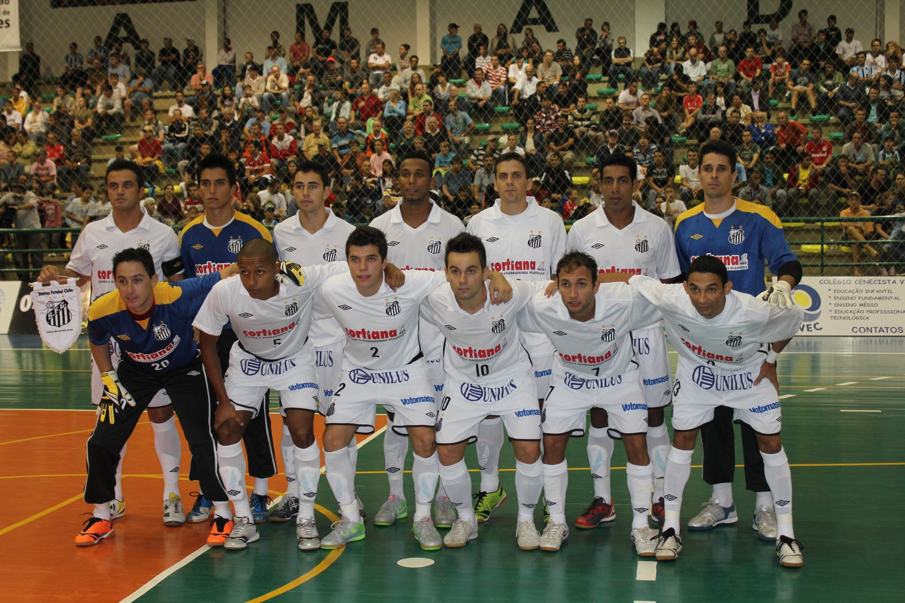

Futebol Americano
A história do Santos Tsunami começou em março de 2009, com a junção de duas equipes já extintas: os BS Spartans e Black Sharks, que deram origem ao até então, somente Tsunami. No início a equipe treinava na praia do Canal 3, ao lado da Concha Acústica, em Santos. Em 2010, o Tsunami passou por sua segunda fusão, desta vez com a equipe Whales, também de Santos, se tornando um time ainda mais forte e competitivo. Neste ano foi formalizada a parceria com o Santos Futebol Clube, se tornando o atual Santos Tsunami. Em dezembro de 2010, a Vila Belmiro, recebeu a final da segunda edição do Torneio Touchdown. Foi a primeira vez que um jogo da modalidade acontecia em um estádio de primeira divisão do futebol brasileiro. O evento atraiu mais de dois mil espectadores ao Estádio Urbano Caldeira. Atualmente o Santos Tsunami conta com 90 jogadores em seu time principal, que treinam todos os sábados, a partir das 14 horas, no CT Meninos da Vila, no bairro Saboó, em Santos.
Futsal
O Departamento de Futsal do Santos FC já contribuiu para a formação de vários jogadores que hoje fazem sucesso pelo mundo, como Robinho, Neymar, Gabigol, Emerson Palmieri e Felipe Anderson. Entre os principais títulos estão: 3 Campeonatos Estaduais 2 Campeonatos Metropolitanos 16 Taças Regionais 15 Copas Expresso 6 Copas Abertas 2 Campeonatos Dallas Cup – EUA 1 Super Copa América 2 Campeonato Mundial – World Futsal Cup – Barcelona 1 Liga Nacional
Goalball
O Lar das Moças Cegas, em Santos, criou a equipe de Goalball em 1999. A histórica parceria com o Santos FC aconteceu em 2006 e assim tornou-se o primeiro Clube de futebol do Brasil a ter uma equipe neste esporte paralímpico. O goalball é um jogo praticado por atletas que possuem deficiência visual e o objetivo é arremessar uma bola sonora com as mãos, no gol do adversário. Hoje a equipe Santos FC/LMC conta com equipes no masculino e feminino, com atletas da Seleção Brasileira. Entre os principais títulos estão cinco Campeonatos Paulistas e o de Campeão Brasileiro em 2016.
Skate
O skatista Guilherme Parada tem 17 anos e divide o tempo entre o esporte e o skate. Em 2015, como amador, foi campeão do Circuito Estadual Mineiro 2016 se tornou campeão paulista amador. Já em 2017 conquistou o Festival de Skate Sesc Verão Amador e do Festival Skate Contest Amador. A partir de 2020, em Tóquio, o skate fará parte da Olimpíada e Guilherme Parada tem o sonho de representar o país na maior competição do esporte mundial.